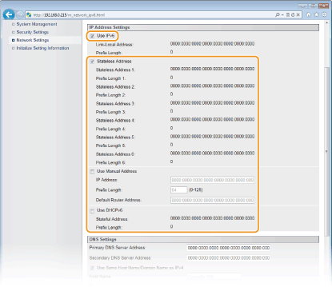

0KU8-022
 |
Use o Remote UI para definir os endereços IPv6. Antes de definir os endereços IPv6, verifique se o endereço IPv4 foi corretamente definido (Visualizando as definições de rede). É possível registrar até nove dos seguintes endereços IPv6.
|
|
Tipo
|
Número máximo disponível
|
Descrição
|
|
Endereço local de link
|
1
|
Um endereço que é válido apenas em uma sub-rede ou link e não pode ser usado para comunicar com dispositivos além de um roteador. Um endereço local de link é definido automaticamente quando a função IPv6 da impressora for ativada.
|
|
Endereço manual
|
1
|
Um endereço que é digitado manualmente. Especifique o comprimento do prefixo e o endereço padrão do roteador.
|
|
Endereço sem estado
|
6
|
Um endereço gerado automaticamente usando o endereço MAC da impressora e um prefixo de rede que é informado pelo roteador. Endereços sem estado são descartados quando a impressora é reiniciada (ou ligada).
|
|
Endereço com estado
|
1
|
Um endereço obtido de um servidor DHCP usando o DHCPv6.
|
1
Inicie o Remote UI e faça o logon no modo Administrador Sistema. Iniciando o Remote UI
2
Clique em [Settings/Registration].

3
Clique em [Network Settings]  [TCP/IP Settings].
[TCP/IP Settings].

4
Clique em [Edit] em [IPv6 Settings].

5
Marque a caixa de seleção [Use IPv6] e configure as definições necessárias.

[Use IPv6]
Marque a caixa de seleção para usar o IPv6 na impressora. Desmarque a caixa de seleção se não quiser usar o IPv6.
Marque a caixa de seleção para usar o IPv6 na impressora. Desmarque a caixa de seleção se não quiser usar o IPv6.
[Stateless Address]
Marque para usar endereços sem monitoração de estado. Desmarque a caixa de seleção se não quiser usar endereços sem monitoração de estado.
Marque para usar endereços sem monitoração de estado. Desmarque a caixa de seleção se não quiser usar endereços sem monitoração de estado.
[Use Manual Address]
Para inserir um endereço IPv6 manualmente, marque a caixa de seleção e insira os valores na caixas de texto [IP Address], [Prefix Length] e [Default Router Address]. Limpe as caixas de seleção se não quiser inserir um endereço manual.
Para inserir um endereço IPv6 manualmente, marque a caixa de seleção e insira os valores na caixas de texto [IP Address], [Prefix Length] e [Default Router Address]. Limpe as caixas de seleção se não quiser inserir um endereço manual.
[IP Address]
Insira um endereço IPv6. Endereços que começam com "ff" (endereços multicast) e endereços de loopback (::1) não podem ser inseridos.
Insira um endereço IPv6. Endereços que começam com "ff" (endereços multicast) e endereços de loopback (::1) não podem ser inseridos.
[Prefix Length]
Insira o comprimento (número de bits) da parte de rede do endereço.
Insira o comprimento (número de bits) da parte de rede do endereço.
[Default Router Address]
Especifique o endereço padrão do roteador, se necessário. Endereços que começam com "ff" (endereços multicast) e os endereços de loopback (::1) não podem ser inseridos.
Especifique o endereço padrão do roteador, se necessário. Endereços que começam com "ff" (endereços multicast) e os endereços de loopback (::1) não podem ser inseridos.
[Use DHCPv6]
Marque a caixa de seleção para usar o endereço sem monitoração de estado. Desmarque a caixa de seleção se não quiser usar o endereço sem monitoração de estado.
Marque a caixa de seleção para usar o endereço sem monitoração de estado. Desmarque a caixa de seleção se não quiser usar o endereço sem monitoração de estado.
6
Clique em [OK].

7
Reinicie a impressora.
Desligue a impressora, espere pelo menos 10 segundos e ligue novamente.
 |
|
Verificando se as definições estão corretas
Certifique-se de que a tela do Remote UI possa ser exibida com o seu computador ao usar o endereço IPv6 da impressora. Iniciando o Remote UI
Se você alterar endereços IP após instalar um driver de impressora
Será preciso adicionar uma nova porta. Configurando as portas da impressora
|